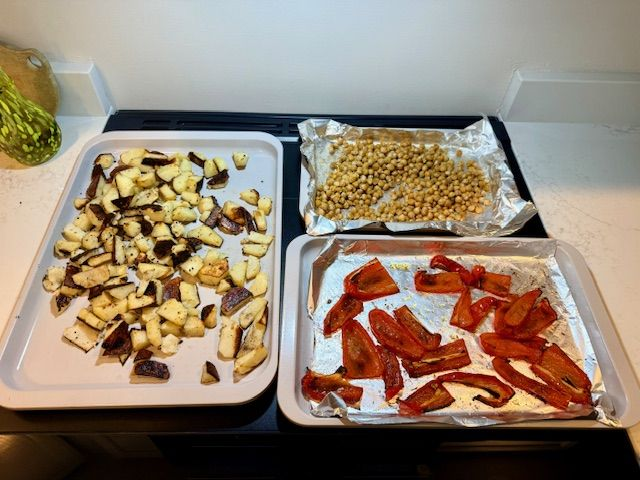
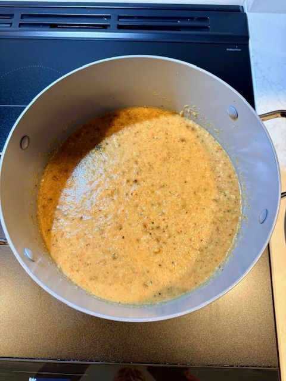

Some dishes announce themselves long before they ever reach the table. This one begins with the soft crackle of peppers blistering in the oven, the slow golden edges of potatoes, and the unmistakable warmth of garlic turning sweet. It’s usually around that moment—when the kitchen smells like something wonderful is happening—that someone wanders in and says, “Rick… what is that incredible smell.”
What I love about this soup is how little it asks of you and how much it gives back. The ingredients are unfussy. The method is calm. The flavor, however, tastes like you spent the entire afternoon coaxing depth from every vegetable. Roasting does the heavy lifting, layering sweetness, smoke, and warmth before anything ever touches the pot.
And like all good kitchen work, it’s flexible. Every kitchen behaves differently—ovens run hot or cool, vegetables vary in moisture, and seasoning is always personal. Trust your senses. Let the peppers tell you when they’re ready. Let the broth guide the consistency. Let the basil brighten things exactly the way you like.
This is the expanded companion to the recipe version of this dish—an invitation to slow down, notice the details, and enjoy the quiet elegance of building flavor from simple things.
🔥 Why Roasting Matters
Roasting is the soul of this soup. It transforms the peppers from crisp and vegetal into something deeper and sweeter. The potatoes soften and caramelize at the edges, giving the final blend its body. Even the garbanzo beans benefit—they toast slightly, adding a subtle nuttiness without any actual nuts involved.
When everything comes together in the blender with warm stock, basil, and a splash of non‑dairy creamer, the transformation is almost startling. What began as a tray of humble ingredients becomes something silky, fragrant, and beautifully layered.
🥣 Technique Notes
Roasting
Spread everything out on the sheet pan. Crowding traps steam and prevents caramelization. You want color—color is flavor.
Stock
Warming the stock with spices before blending gives the soup a backbone. It’s a small step that makes a noticeable difference.
Blending
Add the stock gradually. You can always thin a soup, but thickening it is another story. Aim for silky and pourable.

Finishing
Let the blended soup simmer briefly. This is where the flavors settle into one another. Taste, adjust, trust yourself.
🍽️ Serving
A drizzle of olive oil, a few basil ribbons, and a pinch of chili flakes turn a simple bowl into something elegant. Serve it warm, with crusty bread if you have it, or on its own if you don’t. It stands beautifully either way.
The full recipe lives in the Recipes section, linked below.